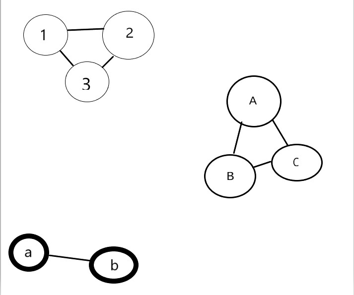

并查集是一种树型的数据结构，用于处理一些不相交集合（Disjoint Sets）的合并及查询问题。常常在使用中以森林来表示。
并查集
什么是并查集
通常开始时让每个元素构成一个单元素的集合，然后按一定顺序将属于同一组的元素所在的集合合并，其间要反复查找一个元素在哪个集合中。看似并不复杂，但数据量极大，若用正常的数据结构来描述的话，往往在空间上过大。
常见两种操作：
- 合并集合
- 查找某个元素属于哪个集合

查询根节点：
1 | int find(int x) |
2 | { |
3 | int r = x; |
4 | while (f[r] != r) |
5 | r = f[r]; |
6 | return r; |
7 | } |
合并集合
1 | void merge(int x,int y) |
2 | { |
3 | int fx,fy; |
4 | fx = findx(x); |
5 | fy = findx(y); |
6 | if(fx != fy) |
7 | f[fx] = fy; |
8 | } |
利用相同集合合并后，来查找他们的祖先是不是同一个，如果是的话表示是同个节点，否则为不同。
如果查找有几个不同的节点，只需要判断F[i]的值是否为i的情况。
例题
比如HDU-1232 畅通工程
1 | Problem Description |
2 | 某省调查城镇交通状况，得到现有城镇道路统计表，表中列出了每条道路直接连通的城镇。省政府“畅通工程”的目标是使全省任何两个城镇间都可以实现交通（但不一定有直接的道路相连，只要互相间接通过道路可达即可）。问最少还需要建设多少条道路？ |
3 | |
4 | Input |
5 | 测试输入包含若干测试用例。每个测试用例的第1行给出两个正整数，分别是城镇数目N ( < 1000 )和道路数目M；随后的M行对应M条道路，每行给出一对正整数，分别是该条道路直接连通的两个城镇的编号。为简单起见，城镇从1到N编号。 |
6 | 注意:两个城市之间可以有多条道路相通,也就是说 |
7 | 3 3 |
8 | 1 2 |
9 | 1 2 |
10 | 2 1 |
11 | 这种输入也是合法的 |
12 | 当N为0时，输入结束，该用例不被处理。 |
13 | |
14 | Output |
15 | 对每个测试用例，在1行里输出最少还需要建设的道路数目。 |
16 | |
17 | Sample Input |
18 | 4 2 |
19 | 1 3 |
20 | 4 3 |
21 | 3 3 |
22 | 1 2 |
23 | 1 3 |
24 | 2 3 |
25 | 5 2 |
26 | 1 2 |
27 | 3 5 |
28 | 999 0 |
29 | 0 |
30 | |
31 | Sample Output |
32 | 1 |
33 | 0 |
34 | 2 |
35 | 998 |
代码
题意求一共有多少种不同集合，来判断要修几条路来使他们都相通？
1 | #include<bits/stdc++.h> |
2 | using namespace std; |
3 | int f[1002]; |
4 | int findx(int x){ |
5 | int r=x; |
6 | while(f[r]!=r) |
7 | r=f[r]; |
8 | return r; |
9 | } |
10 | void merge(int x,int y) |
11 | { |
12 | int fx,fy; |
13 | fx = findx(x); |
14 | fy = findx(y); |
15 | if(fx != fy) |
16 | f[fx] = fy; |
17 | } |
18 | int main() |
19 | { |
20 | int n,m,i,x,y,count; |
21 | while(scanf("%d",&n),n) |
22 | { |
23 | for(i=1;i<=n;i++) |
24 | f[i]=i; //初始化 |
25 | scanf("%d",&m); |
26 | for(int i=0;i<m;i++) |
27 | { |
28 | scanf("%d %d",&x,&y); |
29 | merge(x,y); |
30 | } |
31 | count=0; |
32 | for(int i=1;i<=n;i++){ |
33 | if(find(f[i)==i) |
34 | count ++; |
35 | } |
36 | printf("%d\n",count-1); |
37 | } |
38 | } |
路径压缩
递归方法
1 | int find(int x){ |
2 | if(x!=f[x]){ |
3 | return find(f[x]); |
4 | } |
5 | return f[x]; |
6 | } |
父节点记录
1 | int find(int x){ |
2 | int r=x; |
3 | while(f[x]!=x){ |
4 | x=f[x]; |
5 | } |
6 | while(x!=r){ //如果根节点不是原先的 |
7 | int j=f[r]; //把他父节点值记录下来 |
8 | f[r]=x; //把f[r]记录为根节点 |
9 | r=j; //并且把r等于父节点 |
10 | } |
11 | return x; //返回根节点值 |
12 | } |
有些地方如果表述不清莫怪。